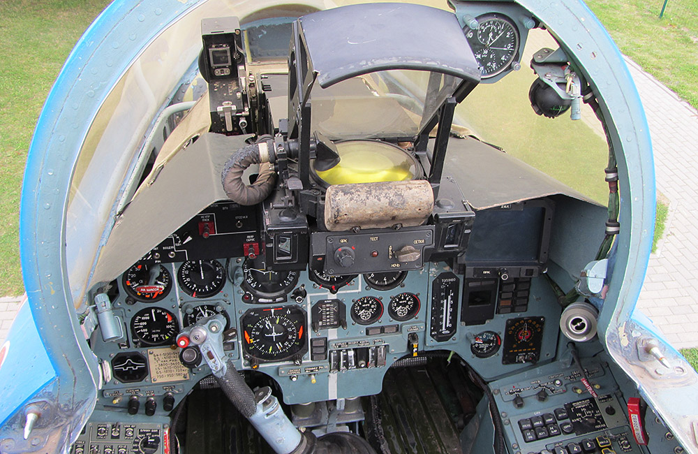
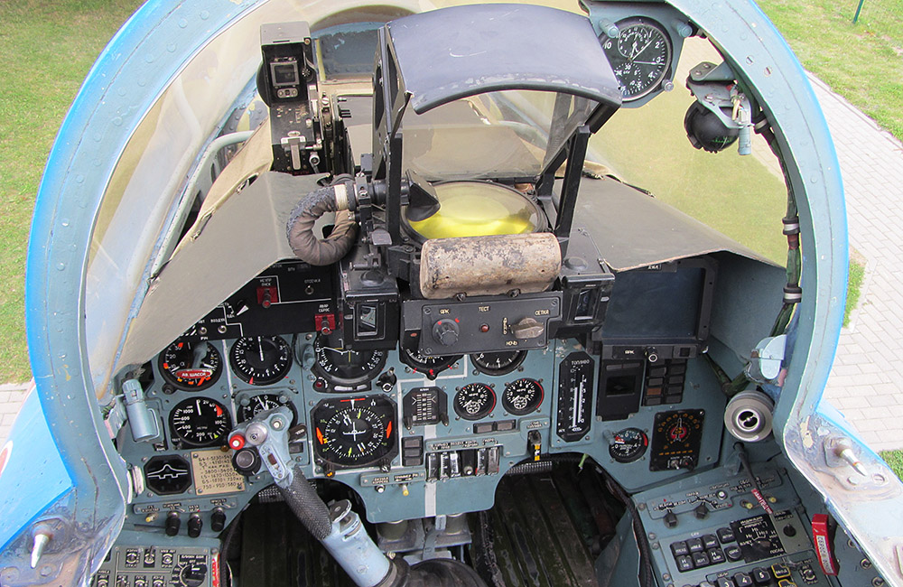

СУХОЙ
СУХОЙ — відомий російський виробник літаків, що спеціалізується на створенні військових і бойових моделей.
Су-27
 

Основна інформація
Тип: Винищувач
Історія: Су-27 був розроблений в середині 1970-х років і є одним з найвідоміших винищувачів у світі.
Розширена інформація
| Макс. швидкість | 2,500 км/год |
|---|---|
| Дальність польоту | 3,530 км |
| Розмах крил | 14.70 м |
| Висота | 5.90 м |
| Вооруження | 1 × 30-мм гармата, ракети Р-27, Р-73 |
| Подвесні модули | 2 × ракети Р-73, бомби різних типів |
Су-30
Основна інформація
Тип: Многофункціональний винищувач
Історія: Су-30 є одним з найсучасніших винищувачів, який використовується багатьма країнами.
Розширена інформація
| Макс. швидкість | 2,400 км/год |
|---|---|
| Дальність польоту | 3,000 км |
| Розмах крил | 14.70 м |
| Висота | 6.10 м |
| Вооруження | 1 × 30-мм гармата, ракети Р-27, Р-73 |
| Подвесні модули | Подвіс для ракет "повітря-повітря" та бомб |
Су-57

Основна інформація
Тип: Стелс-винищувач
Історія: Су-57 — це найсучасніший стелс-винищувач, який використовується в армії Росії для різноманітних бойових завдань.
Розширена інформація
| Макс. швидкість | 2,600 км/год |
|---|---|
| Дальність польоту | 3,500 км |
| Розмах крил | 14.10 м |
| Висота | 4.80 м |
| Вооруження | 1 × 30-мм гармата, ракети Р-77, Р-73 |
| Подвесні модули | Подвіс для бомб і ракет "повітря-земля" |